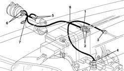

5030B26 lead between battery and starter motor - r+r
- Path
- Procedures > 55 ELECTRICAL EQUIPMENT > 5530 CURRENT GENERATOR > 5530B battery and leads > 5030B26 lead between battery and starter motor - r+r
- Kind
- repair procedure (removal / refitting; the operation number is the code)
- Applies to
- all engines; all production periods
- Interactive page
- https://sloeber94.github.io/elrnDB-a156/en/#/3238433
Applies to: all engines; all production periods
Applies to: all engines; all production periods
 Removing
Removing
 Refitting
RefittingPlace the car on the lifting bridge.
Applies to: engines: 1.6 TS , 1.8 TS, 1.9 JTD 8v , 2.4 JTD 10v; all production periods
Applies to: engines: 2.5 V6; all production periods
1076B52 exhaust pipe (one) leaving l/h or r/h exhaust manifold - r + r
Applies to: engines: 2.5 V6; all production periods
1. By acting by engine compartment side, disconnect battery positive terminal.
2. Disconnect auxiliary connections from terminal.
3. Disconnect electric connection with engine compartment harness.
4. Disconnect electric connection from backing light switch.
5. By acting under the car, disconnect starter motor electric connections.
6. Disconnect alternator electric connections.
7. Disconnect engine oil pressure sensor electric connection.
Free cable from what is still blocking it.
8. Remove cable.

Applies to: all engines; all production periods
Refitting
RemovingCheck harness is not damaged and each conductor is properly anchored to connections.
Check connections have secondary locks.
If necessary, carry out right continuity tests.
Place cable again from battery positive to starter motor - alternator.
Lift the car and connect connections of oil pressure sensor, alternator and starter motor.
Lower the car and connect cable electric connections.
Connect battery terminal.
Applies to: engines: 2.5 V6; all production periods
1076B52 exhaust pipe (one) leaving l/h or r/h exhaust manifold - r + r
Applies to: engines: 1.6 TS , 1.8 TS, 1.9 JTD 8v , 2.4 JTD 10v; all production periods
Applies to: engines: 1.6 TS , 1.8 TS, 1.9 JTD 8v , 2.4 JTD 10v; all production periods
Take the car off the lifting bridge.
Test functionality of involved systems.